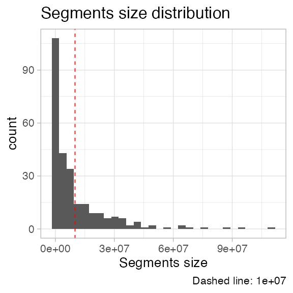
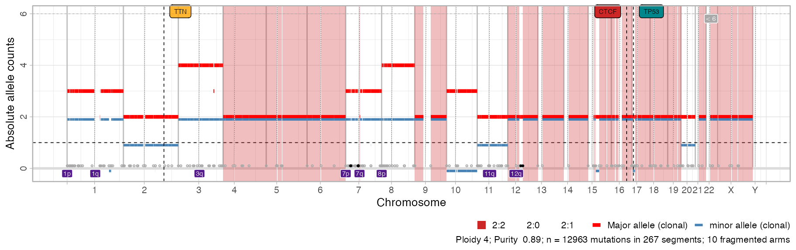
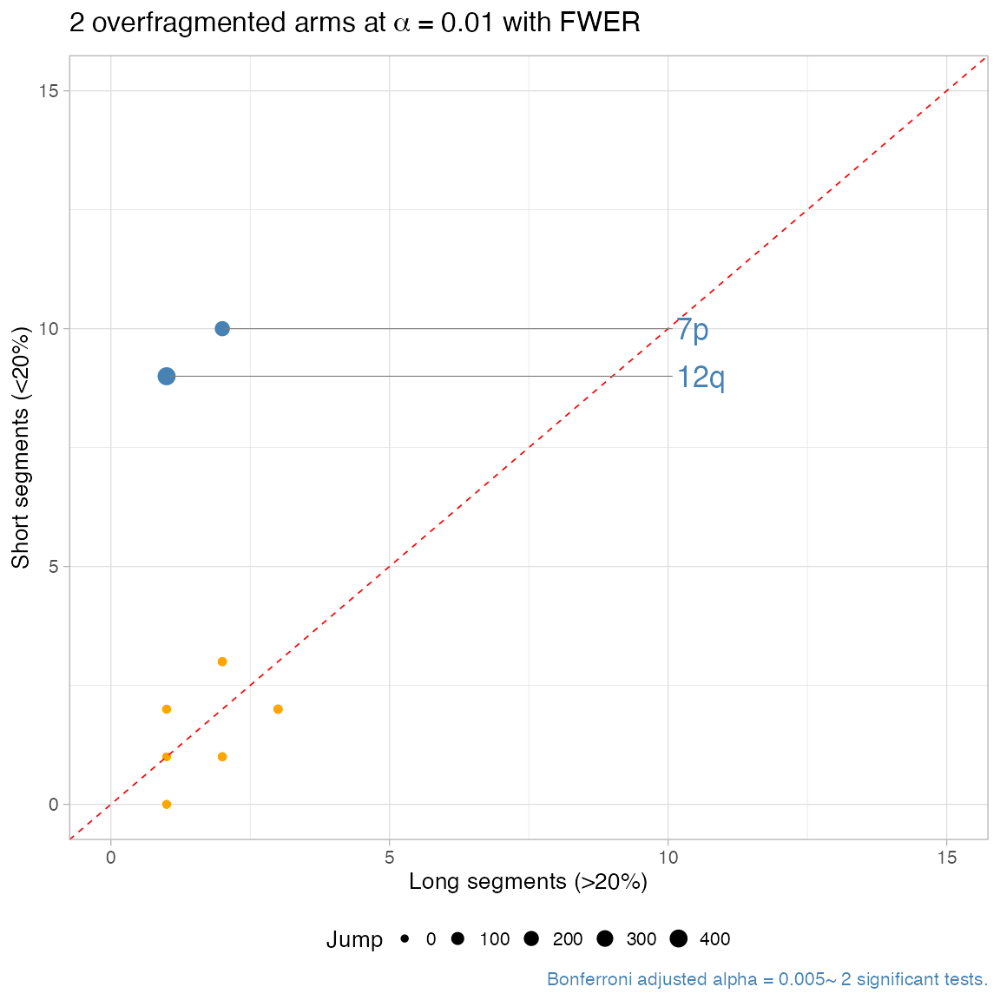

library(CNAqc)
#> ✓ Loading BMix, 'Binomial and Beta-Binomial univariate mixtures'. Support : <https://caravagn.github.io/BMix/>
#> ✓ Loading CNAqc, 'Copy Number Alteration quality check'. Support : <https://caravagn.github.io/CNAqc/>We work with the template dataset.
#> [ CNAqc - CNA Quality Check ]
#>
#> 2:2 [n = 7478, L = 1483 Mb] ■■■■■■■■■■■■■■■■■■■■■■■■■■■ { CTCF }
#> 4:2 [n = 1893, L = 331 Mb] ■■■■■■■
#> 3:2 [n = 1625, L = 357 Mb] ■■■■■■
#> 2:1 [n = 1563, L = 420 Mb] ■■■■■■ { TTN }
#> 3:0 [n = 312, L = 137 Mb] ■
#> 2:0 [n = 81, L = 39 Mb] { TP53 }
#> 16:2 [n = 4, L = 0 Mb]
#> 25:2 [n = 2, L = 1 Mb]
#> 3:1 [n = 2, L = 1 Mb]
#> 106:1 [n = 1, L = 0 Mb]
#> 26:2 [n = 1, L = 0 Mb]
#> 99:1 [n = 1, L = 0 Mb]The fragmentation of a chromosome arm is assessed with a statistical test based on counting the size of the copy number segments mapping to the arm.
# A histogram of segments' lenght
plot_segment_size_distribution(x)
CNAqc counts, for every arm with lenght \(L\) nucleotides:
A one-sided Binomial test is used to compute a p-value for the null hypothesis of seeing \(n_s\) observations in \(n_l\) trials, assuming a Binomial success probability \(p = \delta > 0\). \(p\) represents a model where each segment length is equally likely (uniform distribution).
In this way the test accounts for the difference in lenghts of the chromsome arms; a p-value per arm is reported and adjusted for multiple hyoptheses (Bonferroni).
# Test with default parameters (small segments: < 20% of chromosome arm)
x = detect_arm_overfragmentation(x)
#> ℹ One-tailed Binomial test: 8 tests, alpha 0.01. Short segments: 0.2% of the reference arm.
#> ✓ chr7p, p = 1.71798691840001e-24 ~ 34 segments, 34 short.
#> ✓ chr1p, p = 1.62738995200002e-15 ~ 24 segments, 23 short.
#> ✓ chr1q, p = 4.34176000000001e-08 ~ 13 segments, 12 short.
#> ✓ chr11q, p = 1.0657792e-06 ~ 13 segments, 11 short.
#> ✓ chr12q, p = 2.00704e-07 ~ 12 segments, 11 short.
#> ✓ chr3q, p = 4.52608e-06 ~ 12 segments, 10 short.
#> ✓ chr7q, p = 4.52608e-06 ~ 12 segments, 10 short.
#> ✓ chr8p, p = 9.21599999999998e-07 ~ 11 segments, 10 short.
#> ℹ 8 significantly overfragmented chromosome arms (alpha level 0.01).
print(x)
#> ── [ CNAqc ] n = 12963 mutations in 267 segments (267 clonal + 0 subclonal). Ge
#>
#> 2:2 [n = 7478, L = 1483 Mb] ■■■■■■■■■■■■■■■■■■■■■■■■■■■ { CTCF }
#> 4:2 [n = 1893, L = 331 Mb] ■■■■■■■
#> 3:2 [n = 1625, L = 357 Mb] ■■■■■■
#> 2:1 [n = 1563, L = 420 Mb] ■■■■■■ { TTN }
#> 3:0 [n = 312, L = 137 Mb] ■
#> 2:0 [n = 81, L = 39 Mb] { TP53 }
#> 16:2 [n = 4, L = 0 Mb]
#> 25:2 [n = 2, L = 1 Mb]
#> 3:1 [n = 2, L = 1 Mb]
#> 106:1 [n = 1, L = 0 Mb]
#> 26:2 [n = 1, L = 0 Mb]
#> 99:1 [n = 1, L = 0 Mb]
#> ℹ Sample Purity: 89% ~ Ploidy: 4.
#> ✓ Arm-level fragmentation analysis: 8 segments overfragmented.You can produce a arm-level report for the fragmentation test, with:
\(J\) is the sum of the variation in total copy number profiles, evaluated among each pair of contiguous segments.
Significantly overfragmented arms with high \(J\) have a “scattered” copy number profile. Those with low \(J\) are more uniform, as they show little no copy number change, and can be possibly smoothed (see below).
plot_arm_fragmentation(x, zoom = 3)
#> x Increare zoom to see more chromosomes.Once available, these results appear in any call to plot_segments as annotated purple squares sorrounding the arms.
# Default plot has now segments
plot_segments(x)
#> Scale for 'fill' is already present. Adding another scale for 'fill', which
#> will replace the existing scale.
Smoothing is a good way to start cleaning up the fragmented sets of arms, as it merges segments that have no karyotype change, and are closer than a certain distance.
# Smooth with default parameters
x = smooth_segments(x)
#> Smoothing chr1 with 37 segments: [1-24] [27-30] [31-33] [34-37]
#> Smoothing chr10 with 8 segments: [1-2] [3-4] [5-8]
#> Smoothing chr11 with 22 segments: [1-7] [8-9] [10-22]
#> Smoothing chr12 with 13 segments: [2-3] [12-13]
#> Smoothing chr14 with 2 segments: [1-2]
#> Smoothing chr15 with 9 segments: [1-5] [7-9]
#> Smoothing chr16 with 10 segments: [1-6] [8-10]
#> Smoothing chr17 with 10 segments: [4-5] [6-7] [8-10]
#> Smoothing chr18 with 8 segments: [1-2] [3-8]
#> Smoothing chr19 with 5 segments: [2-5]
#> Smoothing chr2 with 18 segments: [1-8] [10-12] [14-18]
#> Smoothing chr20 with 9 segments: [1-3] [4-9]
#> Smoothing chr21 with 2 segments: [1-2]
#> Smoothing chr22 with 3 segments:
#> Smoothing chr3 with 19 segments: [1-7] [8-13] [15-19]
#> Smoothing chr4 with 8 segments: [1-4] [5-8]
#> Smoothing chr5 with 6 segments: [1-2] [3-5]
#> Smoothing chr6 with 4 segments: [1-2] [3-4]
#> Smoothing chr7 with 46 segments: [1-5] [9-27] [36-38] [39-41] [43-46]
#> Smoothing chr8 with 18 segments: [1-4] [5-11] [12-18]
#> Smoothing chr9 with 3 segments: [1-2]
#> Smoothing chrX with 6 segments: [1-2] [3-6]
#> ✓ Smoothed from 267 to 87 segments with 1e+06 gap (bases).
#> ℹ Creating a new CNAqc object. The old object will be retained in the $before_smoothing field.
#> [ CNAqc - CNA Quality Check ]
#> ℹ Using reference genome coordinates for: hg19.
#> ℹ Input n = 12963 mutations for 87 CNA segments (87 clonal, 0 subclonal)
#> Warning in map_mutations_to_segments(snvs, cna %>% filter(CCF == 1)): [CNAqc] a
#> karyotype column is present in CNA calls, and will be overwritten
#> ✓ Mapped n = 12963 mutations to clonal segments (100% of input)
# Re-compute the fragmentation
x = detect_arm_overfragmentation(x)
#> ℹ One-tailed Binomial test: 2 tests, alpha 0.01. Short segments: 0.2% of the reference arm.
#> ✓ chr7p, p = 4.52608e-06 ~ 12 segments, 10 short.
#> ✓ chr12q, p = 4.19839999999999e-06 ~ 10 segments, 9 short.
#> ℹ 2 significantly overfragmented chromosome arms (alpha level 0.01).
print(x)
#> ── [ CNAqc ] n = 12963 mutations in 87 segments (87 clonal + 0 subclonal). Geno
#>
#> 2:2 [n = 7478, L = 1493 Mb] ■■■■■■■■■■■■■■■■■■■■■■■■■■■ { CTCF }
#> 4:2 [n = 1893, L = 333 Mb] ■■■■■■■
#> 3:2 [n = 1625, L = 362 Mb] ■■■■■■
#> 2:1 [n = 1563, L = 424 Mb] ■■■■■■ { TTN }
#> 3:0 [n = 312, L = 139 Mb] ■
#> 2:0 [n = 81, L = 39 Mb] { TP53 }
#> 16:2 [n = 4, L = 0 Mb]
#> 25:2 [n = 2, L = 1 Mb]
#> 3:1 [n = 2, L = 1 Mb]
#> 106:1 [n = 1, L = 0 Mb]
#> 26:2 [n = 1, L = 0 Mb]
#> 99:1 [n = 1, L = 0 Mb]
#> ℹ Sample Purity: 89% ~ Ploidy: 4.
#> ✓ These segments are smoothed; before smoothing there were 267 segments.
#> ✓ Arm-level fragmentation analysis: 2 segments overfragmented.
plot_arm_fragmentation(x, zoom = 0)